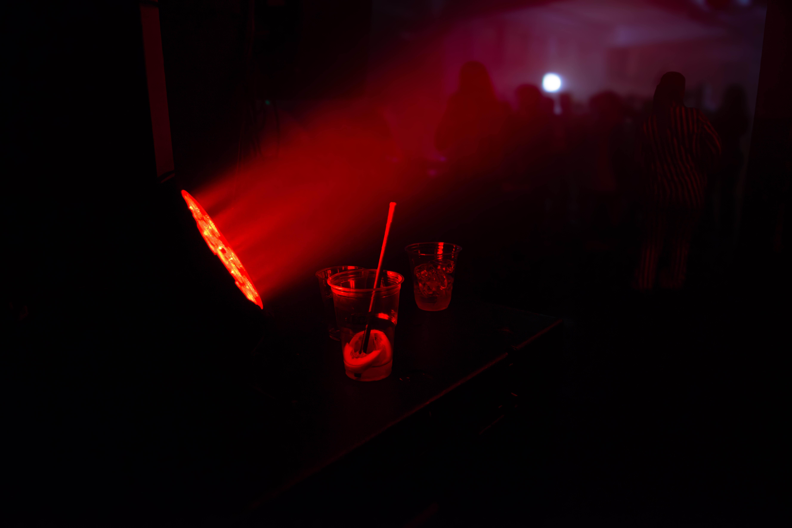

DJ · lyd · lys
Lyd, lys og DJpå Helgeland.
DJ, lyd og lys til russearrangementer, bryllup, konserter og firmafest. Vi tar hele jobben – rigg, teknikk og nedrigg.
Én kveld, fra start til slutt
Slik blir kvelden din
Opprigging
Vi kommer før gjestene. Scene, lyd og lys bygges opp og testes – du trenger ikke løfte en kabel.
Dørene åpner
Lyset dempes, musikken ligger i bakgrunnen. Rommet er klart før den første gjesten er inne.
Showet
Fullt trykk. Lysriggen jobber med musikken, ikke mot den – programmert for akkurat dette lokalet.
Nedrigg
Siste låt tones ut – så pakker vi ned. Du takker gjestene, vi tar resten.
Det vi leverer
Pek på en tjeneste – riggen viser hva den gjør.
- DJ Musikk tilpasset arrangementet, fra første gjest til siste låt.
- Lyd og lys Lydanlegg dimensjonert for lokalet, lysrigg programmert for kvelden.
- Showlaser Nytt · klasse 4 Registrert hos DSA, operert av oss med egen strålevernkoordinator.
- Effekter Røyk, haze og spesialeffekter som løfter hele lysbildet.
Bak riggen



Sett sammen showet ditt
Book kvelden
Velg det du trenger – riggen bak viser showet ditt mens du bygger det. Uforpliktende forespørsel, vi svarer med et konkret forslag.